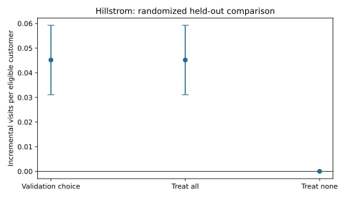

Uplift modeling in Python: the Hillstrom email experiment¶
Decide whether to send a campaign email to everyone, a subset, or nobody. Compare incremental visits on a randomized holdout.
1. Get the data and define the evaluation¶
The Hillstrom email experiment randomly assigned 64,000 customers to a men's email, women's email or no email. This example compares women's email versus no email, using a website visit within two weeks as the outcome. It excludes the men's arm and uses only pre-treatment features. A visit is not a purchase or profit.
The publisher's original download endpoint failed HTTPS certificate validation in our environment. We used this public mirror, SHA-256 0e5893329d8b93cefecc571777672028290ab69865718020c78c7284f291aece. The mirror matches published row and arm counts; independent byte equivalence with the original is not established. Save the CSV as datasets/external/real_eval/hillstrom.csv. It is excluded from Git.
2. Fit a causal tree and choose an email policy¶
Use treatment as part of the target. The columns below describe customers before the campaign. Use validation to choose a threshold. Keep the randomized test outcomes sealed until after the policy is fixed.
flowchart TD
subgraph HonestSplit["Honest Causal Partitioning (Athey & Imbens 2016)"]
direction TB
Sample["Randomized Trial Data (Y, W, X)"] --> Partition{"Random Subsample Split"}
Partition -->|"Structure Sample S_tr"| TreeStructure["Tree Split Optimization\nmax Delta tau(s)"]
Partition -->|"Estimation Sample S_est"| LeafEstimator["Leaf CATE Estimation\ntau_hat = E[Y | W=1] - E[Y | W=0]"]
TreeStructure --> FixedNodes["Fixed Partition Topology"]
FixedNodes & LeafEstimator --> UnbiasedModel["Unbiased Honest Causal Tree"]
endRun this Python block from the repository root. group_value comes from the example script.
from random import Random
import pandas as pd
from mltreelib import ModelTree
from examples.real_survival_uplift import group_value
df = pd.read_csv("datasets/external/real_eval/hillstrom.csv")
df = df[df.segment.isin(["Womens E-Mail", "No E-Mail"])]
features = ["recency", "history", "mens", "womens", "newbie", "zip_code", "channel"]
types = ["numeric"] * 5 + ["categorical"] * 2
ids = list(range(len(df)))
Random(2026).shuffle(ids)
a, b = int(.6 * len(ids)), int(.8 * len(ids))
def inputs(indices):
part = df.iloc[indices]
x = [[None if pd.isna(v) else v for v in row]
for row in part[features].itertuples(index=False, name=None)]
return x, part.visit.tolist(), (part.segment == "Womens E-Mail").astype(int).tolist()
x_train, y_train, w_train = inputs(ids[:a])
x_val, y_val, w_val = inputs(ids[a:b])
x_test, y_test, w_test = inputs(ids[b:])
tree = ModelTree(gain="causal", leaf="mean", max_depth=2, min_rows=250,
prune="none", honesty=True, seed=42)
tree.fit(x_train, (y_train, w_train), col_names=features, dtypes=types)
val_scores = tree.predict(x_val, kind="uplift")
def value_at(threshold):
return group_value(y_val, w_val, [score > threshold for score in val_scores])[0]
threshold = max([min(val_scores) - 1, *sorted(set(val_scores))], key=value_at)
test_scores = tree.predict(x_test, kind="uplift")
for selected in ([score > threshold for score in test_scores],
[True] * len(y_test), [False] * len(y_test)):
print(group_value(y_test, w_test, selected))
The helper estimates the visit-rate difference between treatment and control among selected customers. It multiplies that difference by the selected fraction. The result measures incremental visits per eligible customer. Check arm support in each candidate group. If the treatment has a cost, use net value in threshold selection and reporting.
3. Interpret the held-out results¶
The seeded split contains 25,615 training, 8,539 validation and 8,539 test rows. An honest causal tree ranks customers. Validation selects the policy threshold, and the randomized test set estimates incremental visits. This example assumes zero treatment cost because campaign costs are not in the data.
| Test policy | Selected | Treated / control | Incremental visits per eligible customer | Approximate 95% interval |
|---|---|---|---|---|
| Validation-selected policy | 8,539 | 4,270 / 4,269 | 0.04517 | 0.03108 to 0.05927 |
| Treat all | 8,539 | 4,270 / 4,269 | 0.04517 | 0.03108 to 0.05927 |
| Treat none | 0 | — | 0 | — |

The chosen policy treats everyone. This run therefore supplies no evidence that targeting improves on treat-all. The interval is a normal approximation conditional on the selected population and excludes model-selection uncertainty. The data is from a historical campaign; repeat evaluation in a new experiment, include costs and use the outcome the business actually values before applying a policy.
4. Controlled check with synthetic truth¶
The survival and uplift evaluation script simulates a randomized trial. It uses 3,000 training, 1,000 validation and 2,000 independent test observations. It selects a threshold on validation data and evaluates the fixed policy on test data. The example assigns a treatment cost of 0.5 outcome units per treated person.
| Test policy | Selected | Treated / control among selected | Estimated net outcome per person |
|---|---|---|---|
| Selected policy | 967 | 471 / 496 | 0.7072 |
| Treat all | 2,000 | 972 / 1,028 | -0.0478 |
| Treat none | 0 | 0 / 0 | 0 |

Within the selected subgroup, the script compares observed treated and control outcomes. It subtracts the cost and multiplies by the selected fraction to report value per person in the whole test population. The selected policy's approximate 95% interval is [0.6438, 0.7706]. It uses a normal approximation conditional on the selected fraction; it does not include model-selection uncertainty. Randomized assignment and independent test data support this comparison. Check arm counts and use a suitable uncertainty method for the actual design.
Synthetic truth is available here: the selected policy's true net value is 0.7252 per person and PEHE is 0.2347. Real records do not reveal both potential outcomes, so individual-effect error and PEHE cannot be calculated directly from ordinary real-world outcomes. These calculations are example code, not a claim that the package already exposes uplift evaluation metrics.